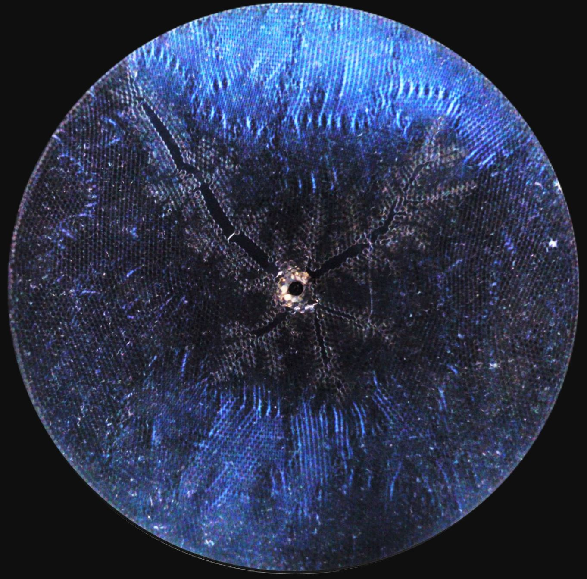

Multiphase Flow and Granular Mechanics
Earth’s surface is composed of a diversity of particulate-fluid mixtures. Pore or grain-scale physics helps to illuminate geophysical processes like landslides, gas venting from lake sediments, injection-induced seismicity, carbon sequestration and geophysical flows that shape landscapes. Our group aims to combine experiments, discrete element and continuum modeling, and remote observations to tackle the multiscale challenge.
Recent Publications
-
Crossover from Viscous Fingering to Fracturing in Cohesive Wet Granular Media: A Photoporomechanics Study (Soft Matter, 2023)
We study fluid-induced deformation and fracture of cohesive granular media, and apply photoporomechanics to directly visualize the grain-scale stresses. We inject water into the oil-filled photoelastic granular pack, varying the injection flow rate, defending-fluid viscosity, and intergranular cohesion. We find two different modes of fluid invasion: viscous fingering, and fracturing with leak-off of the injection fluid. We conceptualize the system's behavior by means of a two-phase poroelastic continuum model. The model captures granular pack dilation and compaction with the boundary delineated by the invasion front, which explains the observed distinct alignments of the force chains.
-
 Fracturing in Wet Granular Media Illuminated by Photoporomechanics (Physical Review Applied, 2022)
Gas migration through a soft, liquid-saturated granular material involves a strong coupling between the motion of the gas and the deformation of the material. This process is central to many natural and industrial systems, such as methane venting from lake and ocean sediments, enhanced oil/gas recovery, and geological carbon sequestration. We directly visualize the evolving effective stress field and discover an effective stress shadow behind the propagating fracture tips, where the granular pack exhibits undrained behavior. We conceptualize the behavior of the system by means of a mechanistic model for a wedge of the granular pack bounded by two growing fractures. The model captures the pore-pressure build-up inside the stress shadow region and the grain compaction in the annular region outside. Our model reveals that a jamming transition determines the distinct rheological behavior of the wet granular pack, from a friction-dominated to an elasticity-dominated response.
-
Jamming Transition and Emergence of Fracturing in Wet Granular Media (Physical Review Research, 2020)
Granular materials are part of our everyday life (e.g. sand, rice, coffee, and corn), and they can exhibit both solids-like and liquid-like properties. We examine, for the first time, how wet granular materials transition from liquid-like to solid-like states (a jamming transition) under immiscible fluid displacement (e.g. water displacing oil). In particular, we developed a hydromechanical computational model coupling two-phase flow at the pore scale with grain mechanics. We find that the affinity of the grains to one fluid compared to the other (i.e. wettability) defines the character of the granular pack deformation, resulting in a beautiful array of patterns ranging from expanding cavities to capillary fractures and frictional fingers.